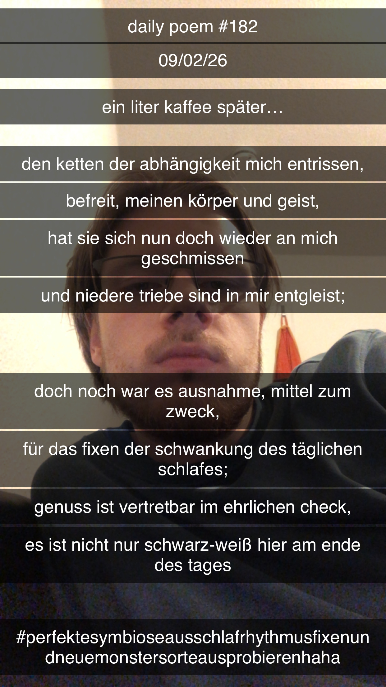

Ein Liter Kaffee später...
Den Ketten der Abhängigkeit mich entrissen,
Befreit, meinen Körper und Geist,
Hat sie sich nun doch wieder an mich geschmissen
Und niedere Triebe sind in mir entgleist;
Doch noch war es Ausnahme, Mittel zum Zweck,
Für das Fixen der Schwankung des täglichen Schlafes;
Genuss ist vertretbar im ehrlichen Check,
Es ist nicht nur schwarz-weiß hier am Ende des Tages.
